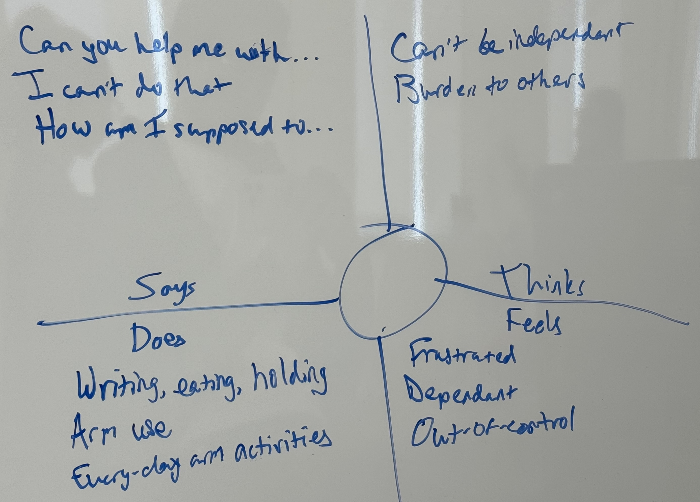
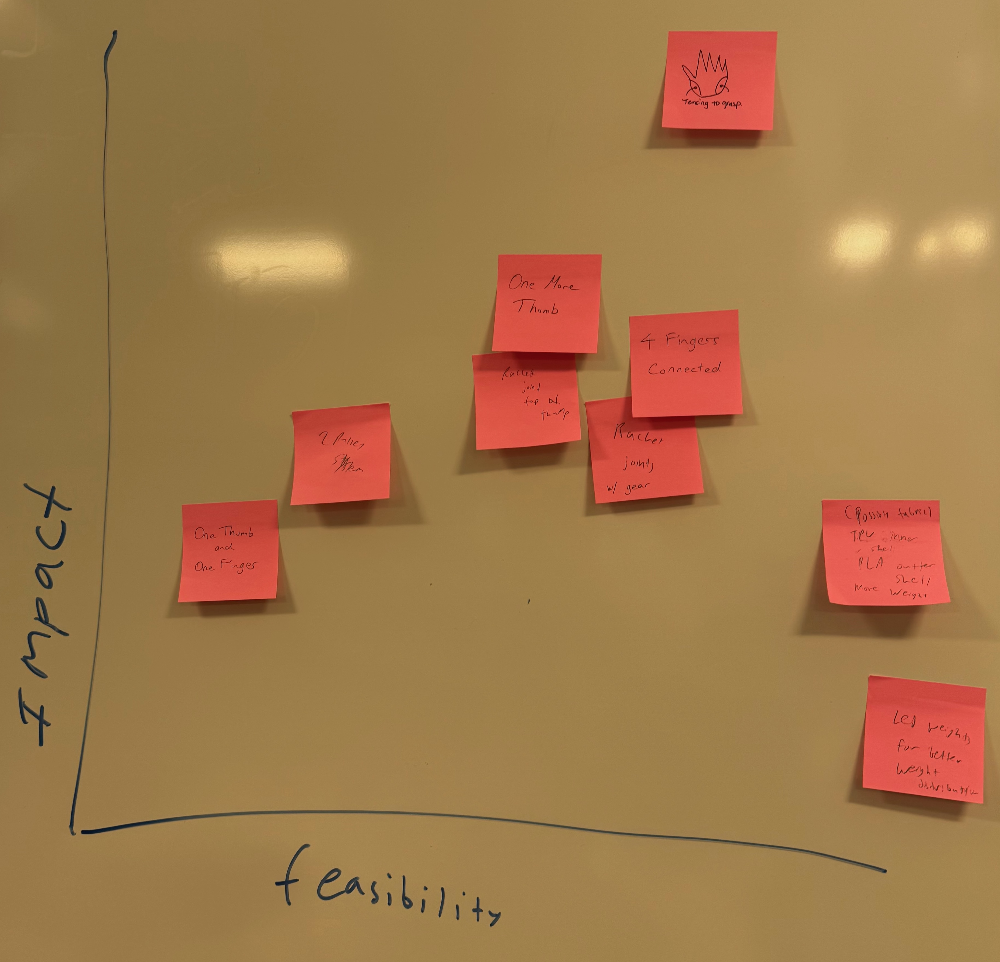
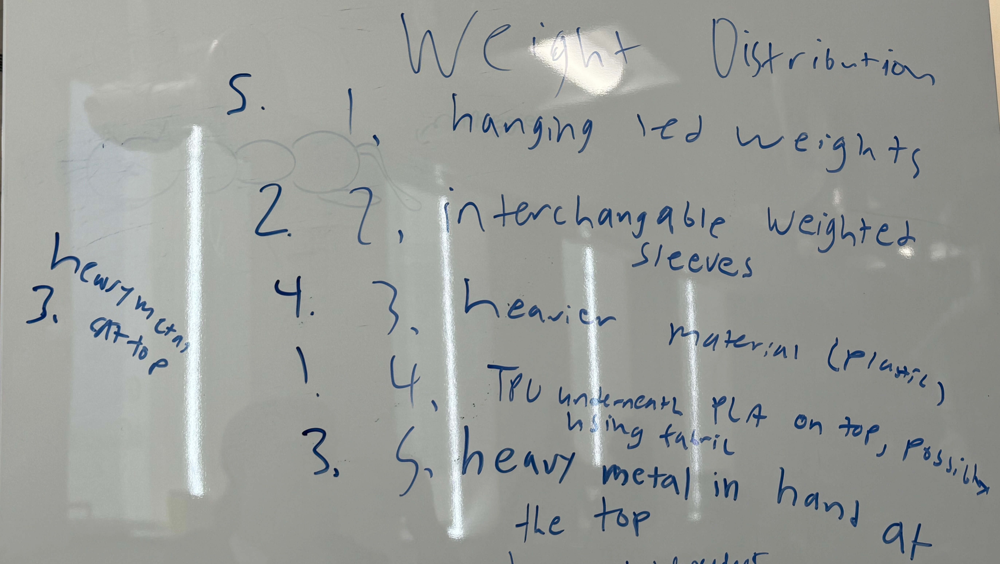

For the Week 6 Project, my teammates and I spent weeks finding a client for our final project: creating a prosthetic device for military personnel.
For the final project, my team and I want to create an upper limb prosthesis for military personnel injured during their service. They can be active or retired. They may already have a prosthesis device, and if they do, we want to create a new prosthesis device that is not a replacement and is meant to do a niche task that their current device is not optimized for.
We may be able to find them through Veterans Affairs, military personnel, or hospitals. Someone might know a person who may be willing to work with us.
Before we started contacting various people and organizations, our university's physics department employed former military personnel, so we walked up to him and asked for assistance. He was willing to help us out, but due to his schedule, he has not been able to help us out yet. However, we continued this process of finding a client online.
We sent multiple emails, LinkedIn messages, and phone calls. I also made a post online community e-NABLE:
Hello, e-NABLE Community, I'm part of an engineering class at Brandeis University, interested in finding military veteran/personnel who could benefit from an upper limb prosthesis. If you are a veteran or know of one who could use our help, please share their story in this thread. Our team's experience in 3D printing and prosthetics can make a significant impact. If you're interested in being a part of our project, please contact me through direct message. Thank you.
My team had multiple phone calls to VA Hospital and Medical Facilities but were struggling to find a client. Either they would not respond to our message, or they stated that they would get back to us but never did. Little progress was being made, so I went on LinkedIn and contacted anyone who graduated from Brandeis and has a connection with the military. Also, I read some online articles and newspapers on military personnel who received a prosthesis. I contacted the patients and doctors for assistance whenever I was able to find contact information. For my communication, I used a standard template:
Hello. I am a Brandeis student working on a group project for the university's first engineering course. Our goal is to build an upper limb prosthesis for military personnel injured during their service. Our team has been contacting nearby DAV offices and more and struggling to find a client near the Boston area. If you know anyone who might be willing to work with us, I would greatly appreciate it if you could connect us with them. Thank you.
Unfortunately, despite contacting over 20 people as a group, no client has been identified.
If we do manage to find multiple clients willing to work with us, we will interview all of them and choose one of them that suits our needs. For example, we prefer that we be able to meet in person around the Boston area a few times a week.
Once the client is selected, our first job is to know who they are. For example, we want to know what they do for a living before needing a prosthesis and what they do now. We want to know what their body is able and not able to do. Once we have a general idea of the client, we want to know their need: what do they want an ideal prosthesis device to do?
If the meeting is in person, we would like to meet them either at the library or cafeteria so that we can have some informal conversation to deepen our relationship. If it is online, the team would get together in a library and use one computer to connect with the client. The meeting should be about an hour long.
During the meeting, we plan to show some prosthetic devices that were built as a class and some sketches of ideas that we have in mind about some possibilities for the project.
I think it is important to discuss some expectations and responsibilities among the team members and the client. We should be explicit that the main goal of this project is to learn the design methodology and learn as an engineer and that we are interested in creating a prosthesis to achieve that goal. Our goal is not to be an expert in prostheses and create a permanent solution for the client. Our team members and the client are to work in good faith, and the client is to understand the risk of participating in this activity, which is that unlicensed, non-medical-certified students are creating the prosthetic device, which can cause injury and discomfort. Hence, the students are not to be liable for any damage, and the client is to use the device with caution and with limit.
We used an IBM Empathy Map for a potential client:
We also created an impact and feasibility map:
Although we do not have a client yet, we understand that there is a limitation of the current open-source prosthetic devices on the market. My teammate identified that there is an imbalance between the patient's right and left body, and this imbalance may cause various physical and mental health issues in the future. Hence, the problem is regardless of the presence of the prosthetic device, the patient will face an imbalance in their body due to their body structure. The solution is to create a prosthetic device that can also address this imbalance.
I think there are many ways to address imbalance using the prosthetic device, and we have ranked them:
Some of the photos and information has been copied or modified from the following sources:
Professor Ian Roy
Professor Ben Rogers